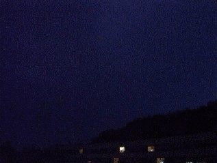

The word nature is derived from the Latin word natura, or "essential qualities, innate disposition", and in ancient times, literally meant "birth".
Nature, in the broadest sense, is the natural, physical, or material world or universe. "Nature" can refer to the phenomena of the physical world, and also to life in general.


View of the Earth, taken in 1972 by
the crew of Apollo 17
Earth is the only planet known to support life, and its natural features are the subject of many fields of scientific research. Within the solar system, it is third closest to the sun; it is the largest terrestrial planet and the fifth largest overall. Its most prominent climatic features are its two large polar regions, two relatively narrow temperate zones, and a wide equatorial tropical to subtropical region. Precipitation varies widely with location, from several metres of water per year to less than a millimetre. 71 percent of the Earth's surface is covered by salt-water oceans. The remainder consists of continents and islands, with most of the inhabited land in the Northern Hemisphere .

An animation showing the
movement of the continents from
the separation of Pangaea until the
present day
Earth is estimated to have formed 4.54 billion years ago from the solar nebula, along with the Sun and other planets. The moon formed roughly 20 million years later. Initially molten, the outer layer of the Earth cooled, resulting in the solid crust. Outgassing and volcanic activity produced the primordial atmosphere. Condensing water vapor, most or all of which came from ice delivered by comets, produced the oceans and other water sources. The highly energetic chemistry is believed to have produced a self-replicating molecule around 4 billion years ago.
Blue light is scattered more than
other wavelengths by the gases in the
atmosphere, giving the Earth a blue
halo when seen from space
The Earth's atmosphere is a key factor in sustaining the ecosystem. The thin layer of gases that envelops the Earth is held in place by gravity. Air is mostly nitrogen, oxygen, water vapor, with much smaller amounts of carbon dioxide, argon, etc. The atmospheric pressure declines steadily with altitude. The ozone layer plays an important role in depleting the amount of ultraviolet (UV) radiation that reaches the surface. As DNA is readily damaged by UV light, this serves to protect life at the surface. The atmosphere also retains heat during the night, thereby reducing the daily temperature extremes.
Weather can have both beneficial and harmful effects. Extremes in weather, such as tornadoes or hurricanes and cyclones, can expend large amounts of energy along their paths, and produce devastation. Surface vegetation has evolved a dependence on the seasonal variation of the weather, and sudden changes lasting only a few years can have a dramatic effect, both on the vegetation and on the animals which depend on its growth for their food.
| Nature | ⭐⭐⭐⭐⭐ | Earth | ⭐⭐⭐⭐ |
| History perspective | ⭐⭐⭐⭐ | Atmosphere, climate, and weather | ⭐⭐⭐ |
| Force of nature | ⭐⭐⭐⭐⭐ | Natural landscape | ⭐⭐ |
| Natural theology | ⭐⭐⭐⭐⭐ | Nature worship | ⭐⭐⭐⭐ |
| Human nature | ⭐⭐⭐⭐⭐ | Natural law | ⭐⭐⭐⭐⭐ |
| Nature reserve | ⭐⭐⭐ | Naturism | ⭐⭐⭐⭐ |
Sign up the form and ask your doubts
To Sign up the form Click here